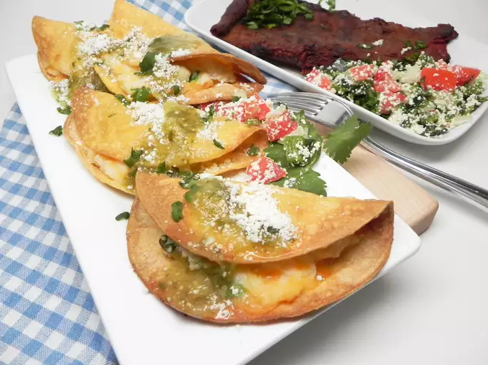

Air Fryer Tacos de Papa

A Quick and Delicious Taco Treat
A quick and easy recipe perfect for when you want a robust meal in a hurry with less mess.
You can easily substitute ingredients for this recipe to add your own flair!
Ingredients
- 1 green onion, chopped
- 1/2 teaspoon ground cumin
- 10 corn tortillas
- 1 serving nonstick cooking spray
- 1/2 cup salsa verde
- 1/4 cup crumbled cojita cheese
Steps
- Heat water in a medium saucepan to boiling. Remove from the heat and stir in instant mashed potatoes. Mix thoroughly with a fork to moisten all potatoes and let stand 5 minutes. Stir in Cheddar Cheese, green onion, and cumin.
- Preheat airfryer to 400 degreesF (200 degrees C).
- Wrap tortillas in a damp paper towel and microwave on high until warm, about 20 seconds.
- Spread 1 tablespoon potato mixture in the center of a tortilla and fold over to make a taco. Repeat with remaining tortillas
- Working in batches, place tacos in basket of an air fryer. Spray the tops with cooking spray and cook until crispy, about 5 minutes. Transfer to a serving platter and repeat to cook remaining tacos.
- Drizzle salsa verde over tacos and top with cojita cheese.